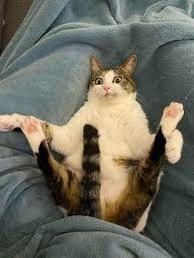
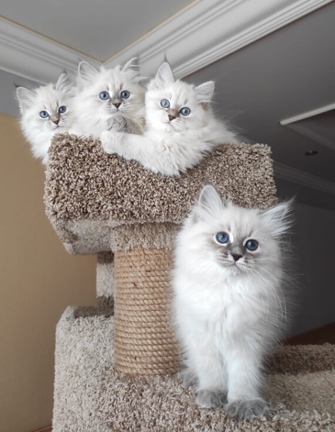

Породы кошек...
Пород кошек великое множество. Большие и маленькие, короткошерстные и пушистые есть даже совсем лысые кошки. На каждую породу находится свой ценитель. Но ничуть не меньше люди любят и обычных дворовых подкидышей и не удивительно, что именно эти кошки оказываются более ласковыми и преданными.
| 
|
Так почему же мы многим симатизируем:
1. Мы забавные
2. Мы изящные
3. Мяяяяуу
|
НАС МНОГО НЕ БЫВАЕТ
